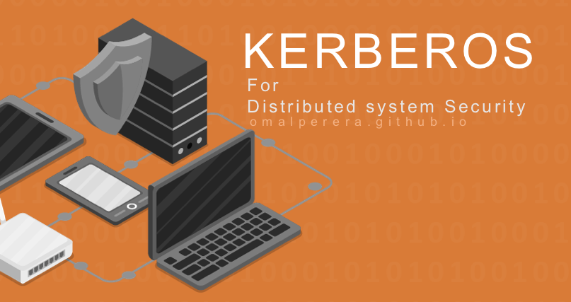
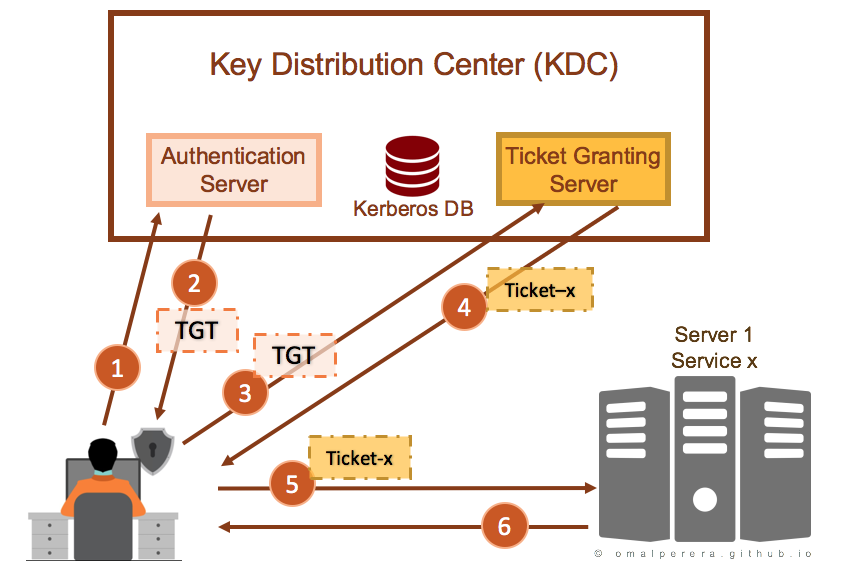

Hello all of you! lets discuss what is kerberos in a simple manner. This article is not going into a deep level of kerberos technology. But you all can get a highlevel overview, with regards to its History, how it works, why is it needed, advantages as well as disadvantages etc.

Introduction
Kerberos is a popular authentication protocol that can be used for single sign-on (SSO). The main key concept behind SSO is getting the services that a user is authorized, with a single login (one time activity). So, user don’t want to login on each of those services in many different times. Kerberos systems offers protection against many network attacks and vulnerabilities. Following are some characteristics of Kerberos.
- uses tickets to authenticate
- avoids saving passwords locally
- avoids sending passwords over the internet
- involves a trusted 3rd-party
- built on symmetric-key cryptography
History
Initially, Massachusetts Institute of Technology (MIT) developed Kerberos to protect network services provided by Project Athena in 1980. The current version of the protocol is version 5. Previous versions of the protocol were based on the earlier Needham–Schroeder symmetric key protocol. Version 4 of the Kerberos protocol was the first version that was publicly released, and is now deprecated for security reasons. In 1987, MIT released the Kerberos software freely available, under a certain copyright permissions and in 2007, MIT formed the Kerberos Consortium to encourage development. In 1993, It became an IETF Standard which is the premier Internet standard.
The name Kerberos arrived from the three-headed dog that guarded the entrance to Hades in Greek mythology. It’s pretty matching for the Kerberos concept since it takes a third-party (a Key Distribution Center) to authenticate between a client and a service or host machine.
Authenticating using Kerberos
Why Kerberos
Kerberos has two basic purposes namely security and authentication. On non-distributed computer systems, a secret key or a password can be used to prove a user’s identity. But on a distributed computer network system, scenario is different than standalone computer systems. If same theory applied for the distributed systems, password must be transmitted over the network, from one machine to another machine. For an example if a user requests a private file from a server, that typical user needs to send his secret key to the server in order to authenticate him. Because this password is the one secret piece of information that identifies a user, anyone in that network knowing a user’s password can access their files as that user.
Therefore, it is necessary to prevent anyone from intercepting or eavesdropping on the transmitted password. In addition, it is necessary to provide a means of authenticating users any time a user requests a service, they must prove their identity.
In order to fill above mentioned gap in the security in distributed systems, Kerberos has:
- Strong mutual authentication.
- Secrets are not transmitted across the network.
- Critical authentication data is encrypted.
- The client (user) is authenticated to the server and the server is authenticated to the client. The client identity is used to authorize services on the server.
- Single sign-on.
- A user convenience meaning a single identity and password can be used for many services with only one login sequence.
So what is the different between Firewall & Kerberos
A firewall is a kind of network security system. Firewalls can be presents in either hardware or software based. Those are basically depending on rules that controls incoming and outgoing network traffic. A firewall acts as a barrier between a trusted network and untrusted network and controls access to the resources of a network through a positive control model. Firewalls assumes, that the attackers are coming from the outside. But in distributed systems, attacks are frequently from within the system.
In contrast, Kerberos assumes that network connections are the weak link in network security rather than servers and work stations.
Kerberos Components
- Key Distribution Center (KDC)
- Each Kerberos realm will have at least one Kerberos server. This server, the Key Distribution Center, contains the Authentication Service, the Ticket-Granting Service, and the master database for Kerberos. These services are implemented as a single daemon.
- Authentication Service
- The authentication service handles user authentication, or the process of verifying that principals are correctly identified.
- Consists of the security servers in the KDC (or KDCs), and security clients.
- A security client communicates with a security server to request information and operations. The security server accesses the registry database to perform queries and updates and to validate user logins.
- Ticket-Granting Service
- Once authenticated, a principal will be granted a TGT and a ticket session key, which gives the principal the right to use the ticket. This combination of the ticket and its associated key is known as your credentials.
- A principal’s credentials are stored in a credentials cache, which is often just a file in the principal’s local directory tree.
- The Kerberos Database
- The Kerberos database contains all of the realm’s Kerberos principals, their passwords, and other administrative information about each principal.
- Each KDC contains its own copy of the Kerberos database. The master KDC contains the primary copy of the database, which it propagates at regular intervals to the slave KDCs.
- Kerberos Utility Programs
- OpenVMS provides three different versions of each of the Kerberos user interface programs, the original UNIX style, a DCL version, and an X Windows version.
- Kerberos Registry
- The Kerberos registry can be manipulated in several ways. It is initially created via the KRB$CONFIGURE command procedure. Other tools used to access the Kerberos information are:
kadmin- Used for reading or updating the Kerberos registry.kinit- Creates credentials for a user.klist- Displays the existing credentials for a user.kdestroy- Deletes a user’s credentials.kpasswd- Changes a user’s Kerberos password.kdb5_util- Dumps or loads the Kerberos database for save and restore operations.
Authenticating using Kerberos

- When a client logs in to the realm, an authentication request is sent to the Kerberos Key Distribution Center (KDC).
- A Ticket-Granting Ticket (TGT) is returned as the result of authentication.
- When the client application starts, the TGT is used to request an application ticket.
- The application ticket is then sent to the application server, which verifies the application ticket with the KDC.
- Service ticket for the required Service is sent to the server.
- Server sends the requested data to the client
Advantages of Kerberos
There are many advantages of Kerberos than traditional securing methodologies.
- Scalable
- Servers do not need to contact KDC to authenticate users
- Only users and machine account authenticate with the KDC, once per 10h of activity
- Secure
- Passwords are not transmitted over the wire
- Ticket based authentication based on certificates trusts
- Short-term session keys (Long-term secrets used only to derive short-term keys)
- Separate session key for each user-server pair
- Advanced Features
- Single Sign-On
- Delegation
- Cross Domain Authentication
- Interoperability
- Mutual authentication
Kerberos Applications
- Local authentication
- login and su in OpenBSD
- Authentication for network protocols
- Remote login
- Remote Shell
- Secure windowing systems
- Microsoft Windows (used in Security Support Provider(SSP))
- For Kerberizing applications such as Email, FTP, network file systems
Weaknesses / Limitations
- Single point of failure
- It requires continuous availability of a central Kerberos server. In a case of Knock out the Kerberos server and no one can log in
- Password guessing
- no authentication is required to request a ticket, so attacker can gather equivalent of
/etc/passwdby requesting many tickets.
- no authentication is required to request a ticket, so attacker can gather equivalent of
- Kerberos is vulnerable if the local machine is compromised and malware captures the password.
- Ticket hijacking – Malicious user may steal the service ticket of another user on the same workstation and try to use it
- server authentication – Attacker may misconfigure the network so that he receives messages addressed to a legitimate server
Image Copyrights : www.freepik.com .